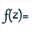

La liste complète des raccourcis clavier est disponible dans le menu des options de la figure de la barre supérieure d'outils  .
.
F1 |
Lance l'aide de MathGraph32. |
F2 |
Réactive l'outil précédent. |
F3 |
Lance la boîte de dialogue permettant de voir et modifier les objets numériques |
F4 |
Active l'outil pour nommer un point ou une droite |
F6 |
Active l'outil gomme pour masquer un objet |
F7 |
Active l'outil rideau pour démasquer un objet masque |
F8 |
Active l'outil d'exécution d'une macro |
F9 |
Lance l'outil affichant le protocole de la figure |
F10 |
Affiche à nouveau la dernière indication pour l'outil en cours (en haut et à droite) |
Ctrl + Shift + c |
Copie la figure dans le presse-papier. |
Ctrl + Shift +Alt + c |
Copie la figure dans le presse papier avec respect de la longueur unité |
Ctrl + Alt + c |
Copie une URL pérenne pour la figure dans le presse papier |
Ctrl + Suppr |
Active l'outil de suppression d'objet graphique |
Ctrl + b |
Cercle par centre et point |
Ctrl + Shift + b |
Cercle par centre et rayon |
Ctrl + d |
Création d'une droite par deux points |
Ctrl + Shift + d |
Création d'un segment |
Ctrl + Alt + d |
Création d'une demi-droite |
Ctrl + e |
Création d'un calcul réel |
Ctrl + Shift + e |
Création d'un calcul complexe |
Ctrl + f |
Création d'une fonction numérique d'une variable réelle |
Ctrl + Shift + f |
Création d'une fonction numérique complexe d'une variable complexe  . |
Ctrl + g |
Activation de l'outil de translation |
Ctrl + h |
Création d'un affichage de texte libre |
Ctrl + Shift + h |
Création d'un affichage de LaTeX libre |
Ctrl + j |
Création d'un curseur |
Ctrl + k |
Création d'un polygone |
Ctrl + Shift + k |
Création d'une surface délimitée par un polygone ou un cercle |
Ctrl + L |
Mesure de longueur |
Ctrl + Shift + L |
Mesure d'angle non orientée |
Ctrl + m |
Création d'une marque de segment |
Ctrl + Shift + m |
Création d'une marque d'angle non orienté |
Ctrl + n |
Création d'une nouvelle figure |
Ctrl + o |
Ouverture d'un fichier contenant une figure mgj |
Ctrl + p |
Création d'un point libre |
Ctrl + Shift + p |
Création d'un point lié |
Ctrl + Alt + p |
Création d'un point par ses coordonnées dans un repère |
Ctrl + s |
Enregistrement de la figure en cours |
Ctrl + u |
Création d'un affichage de valeur libre |
Ctrl + Shift + u |
Création d'un affichage de valeur lié à un point |
Ctrl + z |
Annulation de la dernière action sur la figure |
Ctrl + y |
Annulation de la dernière annulation |